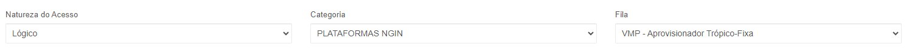
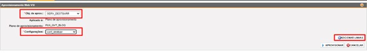
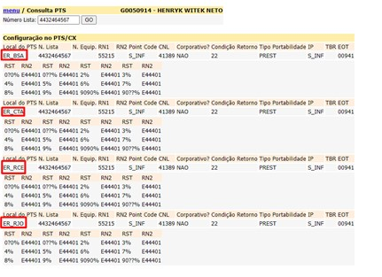
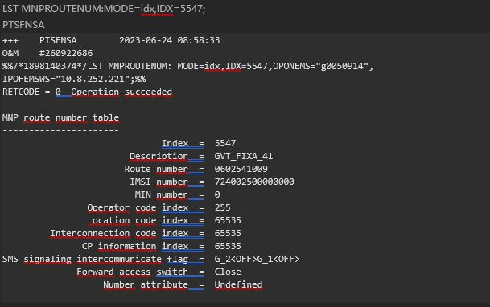
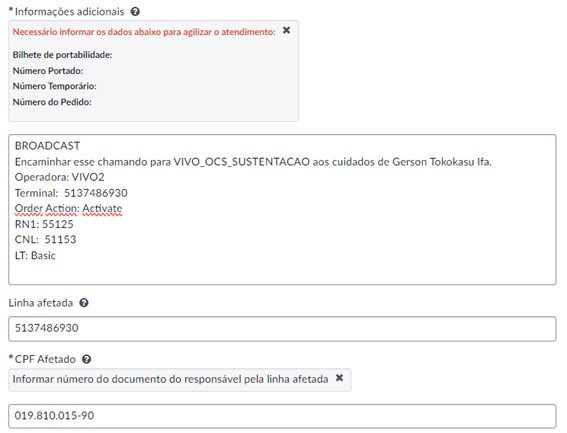

Validação de Portabilidade ITX
Sumário:
- 1. Acessos Gaus
- 2. Validação de Bloqueios
- 2.1 Consulta Bloqueio Gestor de Bloqueio
- 2.2 Consulta Bloqueio BIO
- 2.3 Consulta Bloqueio VMP (via base de referência)
- 3. Portabilidade
- 3.1 Validando PTS V2
- 3.2 Validando PTS V1
- 3.3 Validando PTS Móvel (U2020 - DSP)
- 3.4 Corrigindo PTS V2
- 3.5 Corrigindo PTS V1
- 3.6 Corrigindo PTS Móvel
- 4. Chamados Vivo Now
1. Acessos Gaus
1.1 VPN Cisco
1.2 Taishan U2020 DSP
1.3 VMP V1
1.4 VMP V2
2. Validação de Bloqueios
2.1 Consulta bloqueio Gestor de Bloqueios
Para acessar o gestor, clique aqui.
Qualquer restrição comercial estará descrita nas colunas Status/Motivo
Os casos em que a causa da abertura do defeito for alguma restrição comercial, devemos encerrar o BD como indevido CRM e orientar o cliente a resolver com o comercial.
Para os casos de interrupção do cliente, mas a restrição é parcial, seguir com o Troubleshooting normalmente.
2.2 Consulta Bloqueio BIO
O bloqueio BIO, utilizado em portabilidades em venda de oferta (instala o número correto e mantém ele bloqueado até a janela de portabilidade), é configurado com:
- Adição de IFC XX9 (HSS -> HSIFC)
- Supressão ENUM (ENS -> DNAPTREC)
- Bloqueios ATS (SBR legado e MSR OneCore) para originar (LMTGRP=9001) + para receber (INRST=1) e para receber a cobrar (NSSCCA=0)
Para remover, utilizar comandos gerados no HELPER.
2.3 Consulta Bloqueio VMP (via base de referência)
A restrição no PTS é separada em 3 partes:
- CCTANFR (AntiFraude)
- DESTBAR (Destino barrado, cliente não recebe chamadas)
- CCT_INAD (Inadimplência, o cliente só efetua para o número de emergência)
Como consultar?
1º Acessar a base de referência para cada um dos elementos.
Ou
Ou

2º Criar um filtro para efetuar a pesquisa
**Só efetuar a pesquisa, após aplicar o filtro.
Se aparecer a informação "Nenhum resultado encontrado", não existe referência para este bloqueio.
Se aparecer um resultado após a busca, cliente tem bloqueio.
3º Para retirar o bloqueio:
Escolher o objeto de aprovisionamento
Adicionar linhas
Após a inserção do comando com instância, clicar em aprovisionar
Pronto, bloqueio do elemento escolhido removido.
3. Portabilidade
Conceito:
3.1 Validando PT V2
Acesse o PNADMIN clicando aqui
Ou VMP V2 (link 1 ou link 2 via VPN)
Para vivo2, os campos necessários para criar encaminhamento para alguma central, serão necessários os seguintes campos:
CNL -> validar eta/wfm/pnadmin
CPT -> NAO (indica numero retail == corporativo não)
CRE -> 125 (condição de retorno)
NTL-> instancia (numero de lista)
RN1-> 55215 (RN1 vivo2)
RN2-> central que sera feito o encaminhamento (lista aqui)
TPB -> PREST (sempre)
3.2 Validando PTS V1
VMP V1 (Link 1 ou Link 2 via VPN)
Mesmo caminho dos prints da Vivo 2
Ou via SOC, AS_CO e AS_PL
Para Vivo 1, os campos necessários para criar encaminhamento para alguma central, serão necessários os seguintes campos:
CNL -> validar eta/wfm/pnadmin
EIP -> domain IMS (lista em terus centrais)
NTL-> instancia (numero de lista)
NUE-> RN2 (informação em terus GNP)
NUF-> repete a instancia
RN1-> 55115 (RN1 vivo1)
TPB -> END para prefixos vivo e PREST prefixos de outras operadoras.
3.3 Validando PTS Móvel (U2020 - DSP)
Escolhendo os elementos corretos para pesquisa:
PTS VIVO MÓVEL
| UF | CN / Área | PTS | Nomenclatura |
|---|---|---|---|
| SP_C | 11 / 12 / 13 | VVJC (JR3) | JAGUARÉ |
| 11 / 12 / 13 | VIVC (SD3) | SEDE | |
| 11 / 12 / 13 | JAGB (INTERNACIONAL) | JAGUARÉ B | |
| SP_I | 14 / 15 / 16 / 17 / 18 / 19 | CTNA | JARDIM CONTORNO |
| 14 / 15 / 16 / 17 / 18 / 19 | BONA | BONFIM | |
| 14 / 15 / 16 / 17 / 18 / 19 | NITC | NITERÓI | |
| RJ | 21 / 22 / 24 | BARC | BARRA C |
| 21 / 22 / 24 | BARB (INTERNACIONAL) | BARRA B | |
| ES | 27 / 28 | BFEA | BENTO FERREIRA |
| 27 / 28 | SNEA | SANTOS NEVES | |
| MG | 3x | LUEB | LUXEMBURGO |
| 3x | SAGB | SANTO AGOSTINHO | |
| PR | 4x | CBRA | CABRAL |
| SC | 4x | FNSA | FLORIANÓPOLIS |
| RS | 5x | BVTA | BELA VISTA |
| 5x | INDA | INDEPENDÊNCIA | |
| DF/GO/TO/MT/MS/AC/RO | 6x | TCOB | ESTAÇÃO CENTRO NORTE |
| 6x | TCEB | ESTAÇÃO CENTRO SUL | |
| BA/SE | 7x | TCSB | TELEBAHIA CELULAR SEDE |
| 7x | VLA.B | VILA LAURA | |
| PE/PB/PI/CE/AL/RN | 8x | RCEA | RECIFE |
| 8x | FLAA | FORTALEZA | |
| PA | 91 / 94 / 98 | PIEB | PIEDADE |
| 98 / 99 | SFRB | SÃO FRANCISCO | |
| AM | 92 / 97 | DPDA | DOM PEDRO A |
| 92 / 97 | DPDB | DOM PEDRO B | |
| PA | 93 | ATMA | ALTAMIRA |
| 93 | PFTA | PREFEITURA | |
| RR | 95 / 96 | CTRA | BOA VISTA |
| AP | 95 / 96 | LAGA | LAGUINHO |
Acessar elementos SG7000 e selecionar os elementos para a localidade selecionada.
Comandos a serem executados:
LST SERUATTR -> NUM -> "55+terminal"
Procurar por Routing Number Index
LST MNPROUTENUM -> Index -> "Routing index number" comando anterior
LST MNPROUTENUM:MODE=idx,IDX=5542;
PTSCBRA
LST MNPROUTENUM:MODE=idx,IDX=5547;
PTSFNSA

Campo Description deverá orientar para qual rede a chamada está configurada.
Corrigindo PTS V2
Acesse o SAS aqui
Via VMP (Link 1 ou Link 2 VPN)
Procurar RN2 correspondente aqui
3.5 Corrigindo PTS V1
Via VMP (Link 1 ou Link 2 VPN)
** Se prefixo de origem telefônica/GVT, o TPB sempre será END. Para prefixos de outras origens, sempre utilizar PREST.
O Campo NUE é o RN2, ele pode ser encontrado no TERUS GNP
O campo EIP, pode ser encontrado no Terus Centrais
3.6 Corrigindo PTS Móvel
Script de Criação (Terminal;Ação;RN1;CNL;Tipo)
1145220748;Activate;55125;11326;DDR
Script de Supressão (Terminal;Ação;RN1;CNL;Tipo)
1145220748;Cancel;;11326;DDR
Salvar em arquivo *.txt e copiar para o endereço \\BRTLVBGB0046PL\Entrada
**O arquivo será consumido em até 5 minutos.
Após a execução, pode-se conferir o resultado em \\BRTLVBGB0046PL\Saida
4. Chamados Vivo Now
4.1 Corrigir PTS Vivo 2
Ao final do chamado será solicitado a inserção de uma evidência em anexo, que poderá ser o print do PTS.
Após a abertura do VIVO NOW, é só aguardar a resposta.
OBS.: Não esquecer de selecionar o campo Produto: FIXA (destacado em vermelho acima, para correção do PTS da FIXA) e o carimbo com as informações:
Terminal portado para VIVO2 sem dados de portabilidade no TERUS, favor reprocessar a linha e atualizar todos os sistemas.
NTL: 5137486930
RN1: 55125
CNL: 51153
Tipo de linha: Basic
4.2 Corrigir PTS Vivo Móvel

Ao final do chamado será solicitado a inserção de uma evidência em anexo, que poderá ser o print do PTS.
Após a abertura do VIVO NOW, é só aguardar a resposta.
OBS.: Não esquecer de selecionar o campo Produto: Móvel (destacado em vermelho acima, para correção do PTS da móvel) e o carimbo com as informações:
BROADCAST
Encaminhar esse chamando para VIVO_OCS_SUSTENTACAO aos cuidados de Gerson Tokokasu Ifa.
Operadora:
Terminal:
Order Action: Activate
RN1:
CNL:
LT: